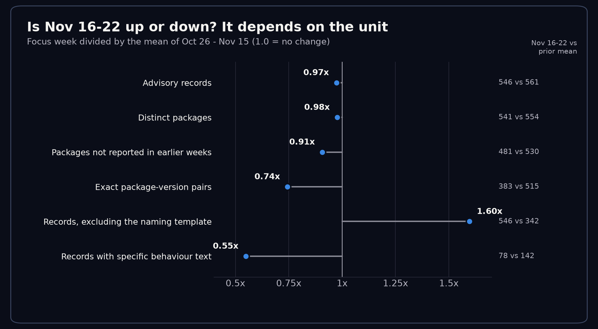
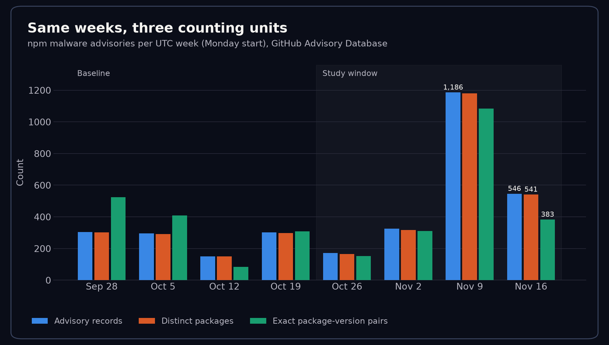
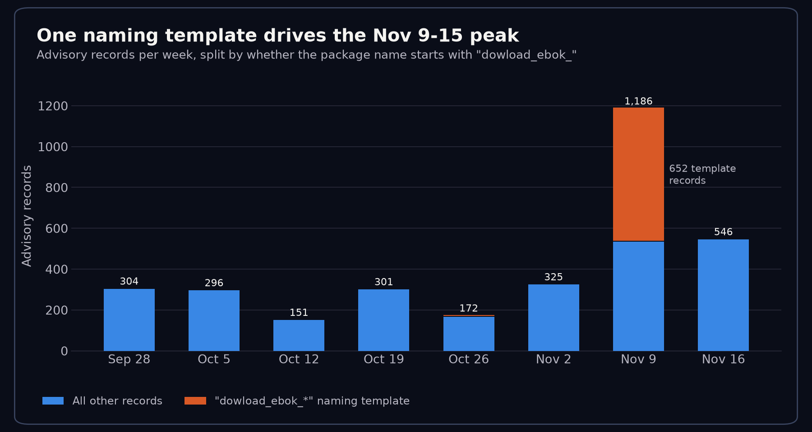
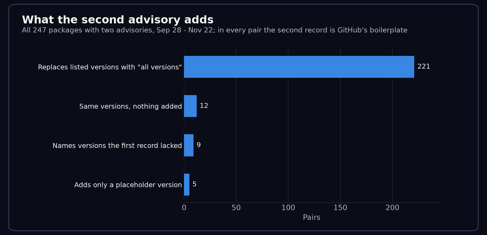
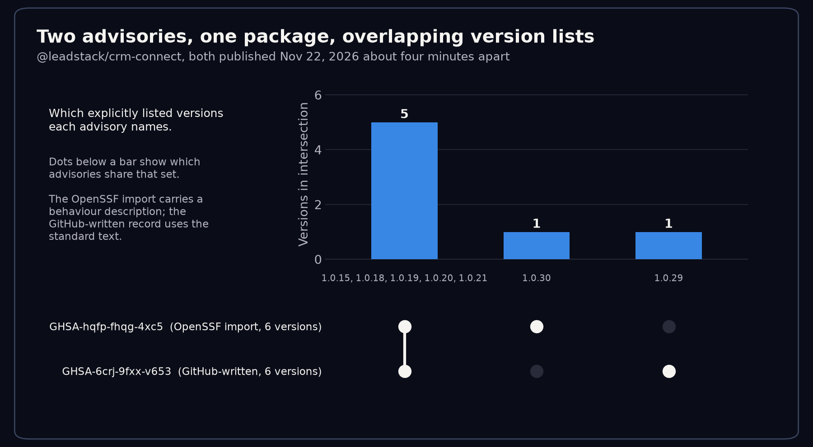

Summary
- What was investigated: all 2,229 npm malware advisories GitHub published from October 26 to November 22, 2026, plus 1,052 from the four weeks before as a baseline. Each week was counted as advisory records, distinct packages and exact package-version pairs, and every package with two advisories (247 pairs) was classified by what the second record added.
- What was found: records and distinct packages barely differ (2,229 vs 2,151), because each advisory covers one package and repeats are rare. The bigger swings come from elsewhere. One day's batch of 645 advisories for packages sharing a single naming template made up 54% of the Nov 9-15 week. Two thirds of records name no specific version at all. Compared with the three weeks before it, Nov 16-22 reads 0.97x by records, 0.74x by exact version pairs and 1.60x by records once that one template is set aside.
- On overlaps: all 247 repeat pairs follow one pattern: a detailed report imported from OpenSSF, then a GitHub-written advisory with standard text about 11 days later (median). None cite each other. The second record added newly named versions in 9 pairs and no description detail in any.
- Why it matters: a week-on-week "malware is up / down" claim built on any one of these units can flip direction under another. These are reporting records, not infections, campaigns or attackers.

Background
GitHub's Advisory Database publishes malware advisories for packages on npm and other registries. Security dashboards, vendor reports and news stories often turn feeds like this into weekly counts. Those counts quietly choose a unit. An advisory can cover one version or every version of a package; two advisories can cover the same package; one bulk intake can add hundreds of near-identical packages on a single day.
A fresh example prompted the project. On November 22, 2026,
GitHub published two advisories for the same package,
@leadstack/crm-connect:
GHSA-hqfp-fhqg-4xc5 and
GHSA-6crj-9fxx-v653.
Their version lists overlap but are not the same. That is one
overlapping pair, not evidence that either record is wrong. The
question is how common this is and what it does to the numbers:
How much do weekly npm malware trends change when counted as advisory records, distinct packages, or explicitly listed package-version pairs? And when two advisories cover the same package, does the second add evidence or repeat the first?
Data & methodology
Source. The
GitHub global security advisories API,
filtered to type=malware and ecosystem=npm,
collected on November 25, 2026 (UTC). The study window is the four
completed UTC weeks from October 26 to November 22,
2026 (Monday to Sunday). The four weeks before it
(September 28 to October 25) were collected the same way as a
baseline, mainly so that a package reported in October is not
counted as "new" in November. Every API page was saved unchanged
with its URL and fetch time, and all later steps read from those
saved pages.
Three counting units.
| Unit | Definition | Study window |
|---|---|---|
| Advisory records | Unique GHSA IDs published in the week | 2,229 |
| Distinct packages | Unique npm package names, kept exactly as written (@scope/name is never shortened to name) | 2,151 |
| Exact package-version pairs | Unique package plus version, counted only where a record lists a version explicitly (= 1.0.3) | 1,884 |
Most records instead use the open range >= 0
("every version"). That cannot be converted into a finite number
of versions from this data, so those records count toward the
first two units but not the third. Their share is reported
separately, in the table below. One baseline record used a bounded range
(>= 2.1.0, <= 2.4.3); it is also left out of the
exact-pair count.
| Study window, Oct 26 - Nov 22 | Records | Share |
|---|---|---|
| Name at least one exact version | 723 | 32% |
Open range only (>= 0 or > 0) | 1,506 | 68% |
| Withdrawn by the time of collection | 3 | 0.1% |
Two kinds of record. Every malware advisory in the data is one of two styles, identifiable from its title and text:
- OpenSSF imports (514 in the window): titled "Malicious code in package (npm)", always citing a report in the OpenSSF malicious-packages repository. The text comes from the original reporter, for example Amazon Inspector or OpenSSF's own Package Analysis project. 99% list exact versions.
- GitHub-written advisories (1,712): titled "Malware in package", with the same standard paragraph every time ("Any computer that has this package installed or running should be considered fully compromised..."). 88% use the open range.
Description detail. Each record's text was coded with a fixed rubric applied by pattern rules in the published code: boilerplate (GitHub's standard paragraph), generic verdict ("found to contain malicious code" and nothing else), automated reason (OpenSSF Package Analysis template naming only a behaviour category, such as "communicates with a domain associated with malicious activity"), or specific behaviour (names a concrete file, install script, action, endpoint or target). Sparse text is not treated as evidence that a report is wrong.
Overlapping reports. Same-package pairs were
found by exact package name across all eight weeks. No package had
more than two records. For each pair the version lists were
compared, a version called 0.0.0-stage was treated as
a placeholder rather than a release (one OpenSSF report describes
it as "an empty placeholder"), and the pair was classified by what
the later record adds. Fifty pairs were then read in full by
hand: all 26 where both records list exact versions, plus a
seeded random 24 of the remaining 221. Each was checked for added
description detail, cross-references between the two records, and
any campaign or family context
(manual_review.csv).
Finding 1: records and distinct packages are nearly the same unit here
Every advisory in the eight weeks names exactly one package, and no package has more than two advisories. Over the study window, 2,229 records cover 2,151 packages: 1.04 records per package. Within any single week the gap is at most 9 records, because most repeat advisories land in a different week from the original (median gap 10.8 days). Deduplicating by package barely moves the weekly trend.

The exact-pair unit is the one that diverges, rising above the record count in late September and falling well below it in November. Findings 2 and 3 explain why.
Finding 2: the Nov 9-15 peak is one day's batch of one naming template
The Nov 9-15 week has 1,186 records, more than twice any other
week. 652 of them are for packages whose names begin
dowload_ebok_ followed by a book title and a random
suffix, and 645 of those were published on a single day,
November 13. All are GitHub-written records with the standard
text and the open range. Five more appeared on October 29.

A shared naming template is not proof of one actor or campaign. It does show how much a single intake batch can shape a weekly count. Including it, Nov 16-22 is slightly below the three weeks before (0.97x). Setting it aside, Nov 16-22 is the highest week in the window (1.60x). Compared with the median of all seven earlier weeks, it is 1.81x either way. The direction of the "trend" depends on which baseline and which batch you include.
Finding 3: the exact-version unit mostly tracks which source wrote the record
OpenSSF imports almost always list exact versions; GitHub-written records almost never do. So the number of exact package-version pairs in a week largely reflects how many OpenSSF imports arrived that week. In Nov 16-22 there were 81, against an average of 144 in the three weeks before, and exact pairs fell to 0.74x while records held steady.
The unit is also concentrated. A handful of packages with long version lists (up to 55 listed versions for one package) carry a large share of each week's pairs: the ten records with the most versions account for 26% to 49% of exact pairs, depending on the week. A version count is closer to "how many specific releases were named" than to "how many malicious packages appeared".
| Unit | Nov 16-22 | Prior 3 weeks (mean) | Range of prior 3 | Ratio |
|---|---|---|---|---|
| Advisory records | 546 | 561 | 172 to 1,186 | 0.97x |
| Records, withdrawn excluded | 545 | 560 | 171 to 1,186 | 0.97x |
| Distinct packages | 541 | 554 | 165 to 1,181 | 0.98x |
| Packages not reported in an earlier week | 481 | 530 | 127 to 1,165 | 0.91x |
| Exact package-version pairs | 383 | 515 | 152 to 1,083 | 0.74x |
| Records naming no exact version | 355 | 384 | 116 to 862 | 0.93x |
| Records, naming template excluded | 546 | 342 | 167 to 534 | 1.60x |
| Records with specific behaviour text | 78 | 142 | 24 to 278 | 0.55x |
Withdrawn records (three in the window, one in the focus week) change nothing at this scale. "Packages not reported in an earlier week" removes 60 packages in Nov 16-22 that already had an advisory since September 28; each is the second record of a pair described next.
Finding 4: repeat advisories follow one pattern and mostly widen scope
Across the eight weeks, 247 packages have two advisories. In every one of them the first record is an OpenSSF import and the second is a GitHub-written advisory with the standard text, published a median of 10.8 days later (middle half: 2.8 to 14.0 days). Neither record links to the other: no shared GHSA reference, and the GitHub-written records carry no reference except their own advisory page. Within the study window, 235 of 2,229 records (10.5%) belong to such a pair, and 24 (1.1%) belong to a pair whose version lists actually intersect.

- Scope widening (221 pairs). The first record lists specific versions; the second says
>= 0. It names no new release and adds no description, but it does change what a dependency scanner would match: every version of the package, including any published later. - Redundant (12). Identical version lists, standard text. For counting, these are the same alert twice. Eleven of the twelve landed in the same week as their partner.
- Complementary versions (9). The second record names releases the first did not, for example three higher versions of one Baileys fork, or a
1.0.0release of a dependency-confusion package first reported only at99.0.0. - Placeholder only (5). The only addition is
0.0.0-stage. These were kept as uncertain rather than counted as new evidence.
The hand review of 50 pairs agreed with these rule-based classes in every case, and confirmed two things the rules could not show on their own. First, none of the second records added package-specific text. Second, the behaviour details, campaign context and family links (several Baileys-fork reports cite a published OX Security write-up; dependency-confusion reports name a shared collector host or publishing pattern) all sit in the OpenSSF imports. Someone reading only the GitHub-written record for these packages would see the verdict but none of the reasoning.
The November 22 case

The two @leadstack/crm-connect records were published
about four minutes apart. Both list six versions; five are shared.
The OpenSSF import (credited to Amazon Inspector) names
1.0.30, and the GitHub-written record names
1.0.29 instead. This is one of only two pairs in the
data where each record names a version the other lacks.
The OpenSSF import is also where all the behaviour detail lives.
According to that report, the package presents itself as a CRM
connector, but its install script fetches configuration from a
hard-coded address (72.62.1[.]108, defanged), installs
a separately published AI agent package into a hidden directory,
and registers it as a root-level system service that takes
commands through a Telegram channel. The report describes this as
giving the operator remote code execution on the installing
machine. These claims are the reporter's. They were not
reproduced here, and the agent package it installs is not itself
accused in either record. The GitHub-written record for the same
package contains only the standard paragraph.
For a version-matching scanner the union of the two lists matters
(an install of 1.0.29 or 1.0.30 is matched
by only one record each). For a weekly count, this package is one
package, two records and seven version pairs.
Description detail
| Study window, Oct 26 - Nov 22 | Records | Share |
|---|---|---|
| Boilerplate (GitHub's standard paragraph) | 1,712 | 76.8% |
| Specific behaviour described | 504 | 22.6% |
| Automated reason only | 10 | 0.4% |
| Generic verdict only | 0 | 0% |
| Withdrawal notice | 3 | 0.1% |
Roughly three in four advisories carry no package-specific description; for those, the advisory record confirms a verdict but not what the package does. In the eight weeks, 19 generic-verdict records appeared only in the baseline. Weekly counts of detailed reports moved independently of the record total (0.55x in the focus week against 0.97x).
What this means for anyone counting
- State the unit. Records and packages are interchangeable for this feed at weekly resolution, so the choice between them rarely matters. Version-level counts are not interchangeable with either, and mostly reflect the source mix.
- Check for intake batches before calling a spike. A single day contributed 54% of the largest week here. Looking at publication days and name patterns takes minutes and changed the direction of the comparison.
- Treat repeats as one package, but keep both records. For counting, the later GitHub-written record is a repeat. For defenders, it often widens the matched range or adds releases, and the earlier record holds the evidence. Joining them by exact package name is currently the only link, since the records do not cite each other.
- Choose the baseline deliberately. Against the previous three weeks Nov 16-22 looks flat; against the seven-week median it looks 1.8x higher. Both are correct descriptions of different questions.
Conclusion
For GitHub's npm malware feed, deduplicating advisories into packages changes the weekly picture by a few percent at most. What moves the picture is the composition of each week: one bulk batch of templated names, and how many records come from the OpenSSF pipeline (with exact versions and behaviour text) versus GitHub's own records (open range, standard text). Overlapping reports are a consistent two-step pattern rather than random duplication. In 9 of 247 cases the second step adds named versions; in most it widens the version range; in none does it add description. A headline weekly change in "npm malware" should come with its unit, its baseline and a check for batches.
Limitations
- Reporting records, not attacks. These counts describe what was published, not infections, downloads, victims or distinct campaigns. Publication date is not when a package was released or first compromised. Nothing here estimates losses or claims threat growth.
- One snapshot. Advisories can be updated or withdrawn after collection; the latest update in this data is from the day before collection. Counts are as of November 25, 2026 (UTC).
- Left edge of the baseline. A package first reported before September 28 can look like a single-record package here. The pair count is a lower bound for that reason.
- Exact name matching. Pairs are found by identical package name. Related packages with different names (typosquat families, forks) are not joined, by design; a shared name pattern is not treated as evidence of one actor.
- Versions. Open and bounded ranges cannot be turned into version counts without registry data, which was out of scope.
0.0.0-stageis treated as a placeholder on the strength of one report's description. - One reviewer, rule-based rubric. The description rubric is pattern-based and the 50-pair review was done by one person. Both are published for re-checking.
Ethics & attribution
Only advisory JSON was analysed. No package was installed, downloaded or run, and no payload was fetched. Malware claims are attributed to the advisory or report that makes them. Packages that imitate legitimate projects (for example forks of the Baileys WhatsApp library, or a package copying the Tailwind CSS forms plugin) are distinguished from those projects, which are not accused. Indicators quoted on this page are defanged, and the published files contain no personal information beyond what the public advisories hold. Advisory data is from the GitHub Advisory Database (CC BY 4.0); imported reports originate in the OpenSSF malicious-packages repository (Apache 2.0) and the reporters it credits.
Sources
- GitHub REST API: global security advisories
- GitHub Advisory Database (data and license)
- OpenSSF malicious-packages repository
- OSV schema
- GHSA-hqfp-fhqg-4xc5 and GHSA-6crj-9fxx-v653 (@leadstack/crm-connect)
- PhantomSub: malicious npm campaign secretly adds users to WhatsApp spam channels (OX Security), cited by many Baileys-fork reports in the data
Data & code
Raw API pages, unchanged, in data/raw/: study window
(manifest,
23 pages) and baseline
(manifest,
11 pages); each manifest lists its page files.
Flattened tables: records.csv
(one row per advisory), versions.csv
(one row per affected-package entry).
Results: weekly_units.csv,
week_comparison.csv,
window_totals.csv,
pairs.csv,
pair_relations.csv,
detail_levels.csv.
Hand review: review_candidates.csv,
manual_review.csv.
Pipeline. collect.py downloads the advisories page by page into a timestamped snapshot with a manifest; prepare.py flattens the snapshots into record and version tables; analysis.py computes the weekly units, comparisons, pairs and description rubric; charts.py draws the figures; verify.py recomputes the headline numbers from the published CSVs with pandas alone. Dependencies: requirements.txt (Python 3.12).
Check the results from the published data (no
API access needed). Download code/ and
data/ into one folder, then:
pip install -r code/requirements.txt
python code/verify.py # expect "0 mismatches (57 checks)"
python code/charts.py # redraws every figure on this pageRe-collecting from scratch runs
python code/collect.py (study window) and
python code/collect.py 2026-09-28..2026-10-25 (baseline),
then prepare.py and analysis.py. Because
advisories change after publication, a later collection of the same
dates can differ slightly.